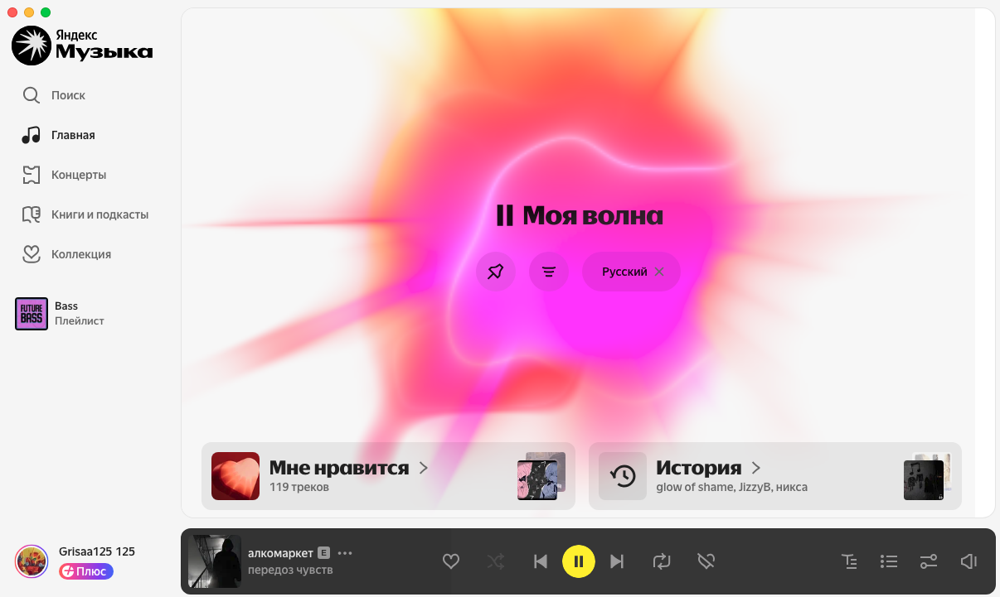
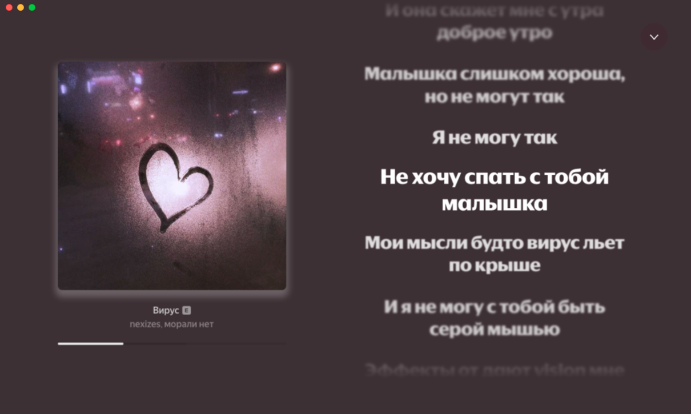
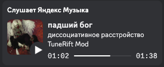

Старый дизайн
Знакомая структура ПК-клиента возвращается для тех, кому она была удобнее нового интерфейса.
● УЖЕ ЕСТЬНЕОФИЦИАЛЬНЫЙ ПК-МОД / ПРИВЫЧНЫЙ ДИЗАЙН
TuneRift возвращает старый дизайн ПК-клиента и аккуратно добавляет недостающие функции для тех, кому новый интерфейс оказался менее удобным.
REC НЕЗАВИСИМЫЙ МОД · НЕ СВЯЗАН С ЯНДЕКСОМ
[ 00 / ЗАЧЕМ ]
Новый дизайн оказался менее удобным. TuneRift возвращает знакомую структуру и не добавляет шум ради функций.
[ 01 / ВОЗВРАЩЁННЫЙ ИНТЕРФЕЙС ]
Знакомая навигация, «Моя волна», история и нижний плеер снова собраны в одном спокойном рабочем пространстве.

[ 02 / ПОЛНЫЙ ЭКРАН ]
Готовый полноэкранный режим собирает крупную обложку, строки текущего трека и управление в более сосредоточенный интерфейс.

[ 03 / ФУНКЦИИ ]
Знакомая структура ПК-клиента возвращается для тех, кому она была удобнее нового интерфейса.
● УЖЕ ЕСТЬDiscord показывает трек, исполнителя, обложку и состояние воспроизведения.

● УЖЕ ЕСТЬВстроенный аддон подбирает альтернативную версию трека, чтобы вернуть исходное звучание.
● ВКЛЮЧЁН ПО УМОЛЧАНИЮОкно запоминает размер и позицию, добавляет настройки, область перетаскивания и чистит лишние блоки сервиса.
● УЖЕ ЕСТЬОтдельное окно для управления Discord RPC, аддонами и локально сохранёнными настройками.
● УЖЕ ЕСТЬОтдельный интерфейс с крупной обложкой, текстом текущего трека и управлением без лишних элементов.
● УЖЕ ГОТОВ[ 05 / СКАЧИВАНИЕ ]
Полноценный релиз TuneRift v1.0.0 доступен для Windows, macOS и Linux. Выбери нужную платформу и скачай приложение.
Установщик TuneRift для обычного ПК.
↓ СКАЧАТЬ V1.0.0 02Универсальная DMG-сборка для Mac.
↓ СКАЧАТЬ V1.0.0 03Настольная x64-сборка для Linux.
↓ СКАЧАТЬ V1.0.0ПОЛНЫЙ РЕЛИЗ / V1.0.0 · ПРЯМЫЕ ССЫЛКИ НА СБОРКИ ДЛЯ ТРЁХ ПЛАТФОРМ
[ 06 / РЕЛИЗ V1.0.0 ]
TuneRift v1.0.0 доступен для Windows, macOS и Linux. Скачай готовую сборку выше или открой страницу проекта на GitHub.
● ПОЛНЫЙ РЕЛИЗ / V1.0.0
Открыть GitHub ↗